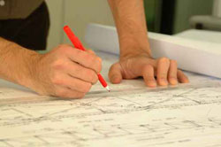

About CLA
CLA Services
Key Staff
Below is a brief listing and description of our key staff members.
Thomas L. Cummings, P.E., Principal
Mr. Cummings has been gaining experience in all aspects of civil engineering since 1969, ranging from the design of streets, utilities, drainage, structures, site improvements and bridges. He has worked as a civil engineer for the City of Norwich and in the military, as well as being a private consultant since 1978. He has also provided on call engineering to several municipalities in Eastern Connecticut.
Ellen M. Bartlett, P.E., CPSWQ, Principal
Ms. Bartlett joined the firm of CLA Engineers, Inc. in 1987 when she immediately became part of the design of several civil engineering developments and capital improvement projects. She is a LEED accredited professional providing green building consulting services for institutional and residential projects. Ms. Bartlett is a Certified Professional in Storm Water Quality with extensive experience in hydrology.
Robert A. DeLuca, P.E., Principal
Mr. DeLuca has been involved with civil and utility engineering in the Eastern Connecticut and Rhode Island areas for over 20 years. His specific utility experience includes water supply, sanitary engineering and storm drainage from conceptual planning to final construction. He also provides on call engineering services to several municipalities in Eastern Connecticut.
Jeremey Williamson, P.E., Associate Structural Engineer
Jeremey Williamson is a Professional Engineer licensed in the state of Connecticut, Massachusetts and New York. He is also NCEES certified which allows for quick license reciprocity throughout the country. He has over 12 years of experience in providing structural engineering services in New England. He has designed projects using steel, wood, masonry and reinforced concrete for high-end residential, commercial, institutional and municipal buildings, bridges and other structures. He has experience designing in high wind and coastal flood zones. He acquired several years of experience building and remodeling residential and commercial projects before becoming a structural engineer.
Robert C. Russo, C.S.S., Soil Scientist/Environmental Scientist
Mr. Russo has been involved with wetland and environmental investigations and permitting throughout Connecticut for the past 20 years. His experience includes utility, roadway, commercial and residential projects. He is familiar with permitting requirements on the local, State and Federal levels. He has also provided on-call soil scientist, permitting and inspection services to several municipalities in Eastern Connecticut.